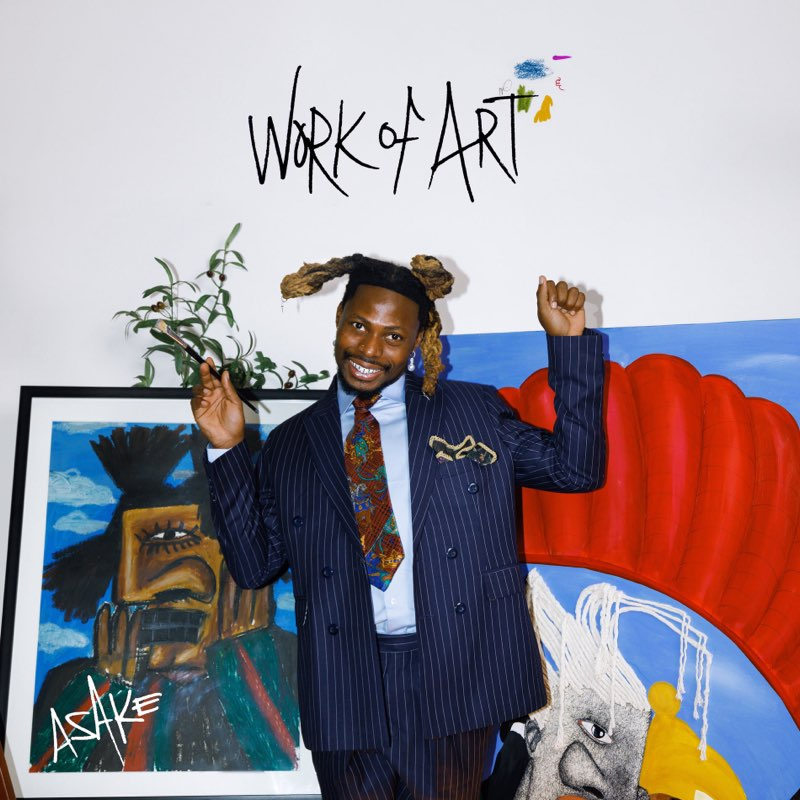
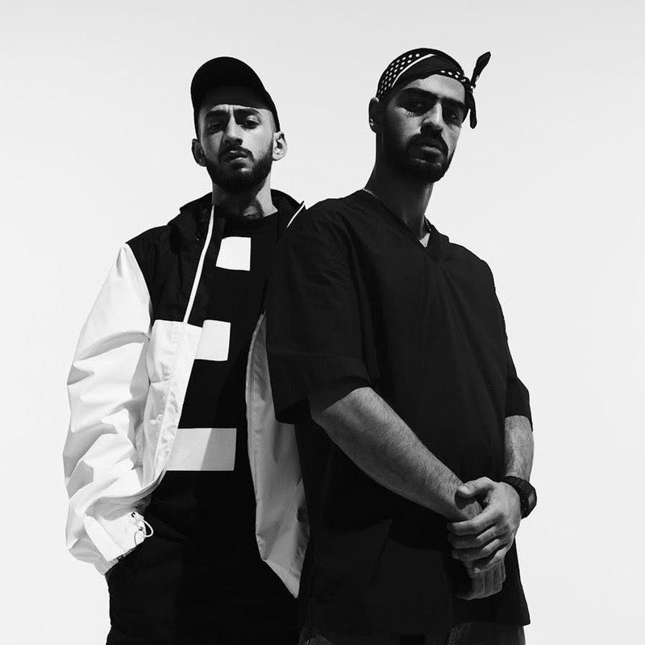

01 Baby Shark
2:16
Artists
Children's music, Italian pop, Afrobeats, hip-hop and country. Every artist on the label, with their five most-streamed songs and how long each one runs.
Children's Music
The children's music powerhouse behind the most-watched video on the internet. Short, loud, unbelievably sticky.
01 Baby Shark
2:16
02 Wheels on the Bus
2:35
03 Five Little Monkeys
2:05
04 Monkey Banana
2:24
05 Shark Family
2:11

Italian Pop
Sixty years of Italian pop in one voice: rock and roll imported, rewritten and sung back louder.
01 Azzurro
3:41
02 L'emozione non ha voce
4:13
03 Il ragazzo della via Gluck
4:16
04 Susanna
4:26
05 Confessa
4:16

Afrobeats
Amapiano log drums, fuji chants and street-Yoruba hooks. The loudest new voice out of Lagos.

01 Sungba
2:47

02 Joha
2:35

03 Jogodo
3:08

04 Amapiano
3:22
05 Lonely At The Top
2:16

Hip-hop
Two rappers from Vladikavkaz, half sung and half spoken, built on dub basslines and long reverbs.

01 Kosandra
3:18

02 Utopia
3:00
03 Minor
3:13

04 Saloon
2:46

05 I Got Love
4:04

Country
The man in black. Three chords, the truth, and a baritone that outlasted every genre it was filed under.
01 Hurt
3:36
02 Ring of Fire
2:38
03 Highwayman
3:03
04 God's Gonna Cut You Down
2:38
05 Ghost Riders in the Sky
3:45